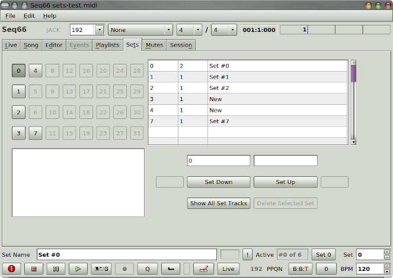

-
Set storage.
Sets are part of the song, and are thus stored in
the
.midi file.
They are stored in a sequencer-specific (SeqSpec)
section of the song, and so are not available to other
sequencers.
-
Number of sets.
Currently, up to 32 sets can be stored in a song.
Sets are numbered from 0 to 31.
Note that Seq66 always starts showing
set 0.
-
Set features.
Each set has a number and a name.
The names can be entered in the bottom of the main
windows.
-
Sets grid.
In the Sets tab, the sets can be selected via
a grid of buttons, or by selecting a row in the sets table.
Sets can be moved around and deleted.
|
-
Tricky.
The sets tab is a bit tricky to use, and
probably needs some more testing.
Report bugs!
|
|

|
| Sets Tab |
|